This tutorial shows division members how to connect research data registered in the
Lab Notebook with related Inventory objects in the Data Store. Using the synthetic
“Material Synthesis” example, you will connect Experimental Steps with
instruments, chemicals, samples, and other Experimental Steps using parent-child
relationships so that the origin and processing history of research datasets can be traced.
What you will learn
Explain how parent-child relationships connect objects represented in openBIS.
Connect one Experimental Step in the Lab Notebook with related Inventory objects.
Use batch update to add relationships to multiple Sample objects from the same Collection.
Use the Object Browser to prepare a batch update for objects located in different Collections.
Visualise parent-child relationships between Objects using the Hierarchy Graph and Hierarchy Table, and use those views to support dataset traceability.
Before you begin
This tutorial is designed for openBIS version 20.10.12 and requires
prior experience with openBIS. It builds directly on the earlier Lab Notebook and
Inventory tutorials. Before starting, you should already be comfortable navigating
Projects, Collections, Objects, and Datasets and editing registered objects.
Before starting this tutorial, you must:
Read the guideline “How to represent research data in the Data Store”
and understand the recommended structure
Space → Project → Collection → Object → Dataset.
Complete “Upload data in the Lab Notebook”. Your User Space should
contain the Material Synthesis Project, the tutorial Collections,
Experimental Steps, and the datasets attached to the corresponding Experimental Steps.
Complete “Register inventory items”. The required Instrument and
Chemical objects should be available and the Sample objects for the tutorial should
already be registered in the Inventory.
Have the required permissions to edit the relevant Lab Notebook and FB Inventory objects.
Have access to the
playground instance
(access restricted to BAM employees with VPN connection). How to log in to the Data Store
instances is described in this
guide.
If you encounter problems, contact the Data Store team.
Do not continue with an incomplete tutorial structure:
this tutorial updates objects that already exist. If Experimental Steps, Instruments,
Chemicals, or Samples from the previous tutorials are missing, register or restore them
first rather than creating substitutes during the connection exercises.
Tutorial sequence
Tutorial sequence: This tutorial is Step 5 of 5 in the
synthetic “Material Synthesis” example. The previous tutorials created
the Lab Notebook structure and datasets and registered the corresponding Inventory items.
This final tutorial connects those objects and completes the representation of the research
workflow in the Data Store.
Key concepts
Parent-child relationships
Objects represented in openBIS can be connected using parent-child relationships.
For research-data traceability, these relationships can link Experimental Steps in the Lab Notebook
with the resources used during an activity and with the outputs generated by that activity.
Datasets remain attached to the Experimental Step that describes how they were generated.
Instrument / Chemical / input Sampleresource or input object
→
Experimental Stepactivity recorded in the Lab Notebook
→
Sample / next Experimental Stepresearch output or downstream activity
Datasetattached to the Experimental Step that generated it
Important: openBIS parent-child relationships: The Hierarchy Graph only visualises parent-child connections from Object to Object. These relationships describe a directed connection between registered openBIS Objects. The terms parent and child therefore do not have the same meaning as in programming languages, where they often describe inheritance, class hierarchies, or ownership in a software structure. In openBIS, they are links used to represent how research Objects are related. Decide which Object is the parent and which is the child before saving or batch-updating a relationship. A useful convention for this tutorial is to represent resources and inputs as parents of an Experimental Step, and generated Samples or downstream Experimental Steps as its children.
Remember:Datasets are not visible in the Hierarchy Graph. A dataset remains attached to the Experimental Step that describes how it was generated. Open that Experimental Step and use its Object-to-Object hierarchy to trace the Inventory items, inputs, outputs, and downstream activities associated with the dataset.
Traceability through connected objects
Parent-child connections create a navigable hierarchy between the Lab Notebook and Inventory.
In the openBIS ELN, parent-child relationships between Objects can be visualised as a
Hierarchy Graph or Hierarchy Table. Because datasets are attached to
Experimental Steps, use the object hierarchy to document the resources, inputs, outputs, and downstream
activities associated with the Experimental Step that generated a dataset.
What the hierarchy view contains: the relationship visualisation is an Object genealogy.
The dataset itself is not the starting node of the Hierarchy Graph. To trace a dataset, first open the
Experimental Step to which the dataset is attached, and then visualise that Experimental Step's Object
relationships.
Single-object editing and batch update
Use direct object editing when you want to create or correct a small number of relationships.
Use batch update when several existing objects need relationship changes. Batch
update modifies objects that already exist; it is different from batch registration, which creates
new objects.
Connections for “Material Synthesis”
The tutorial example combines Experimental Steps from the Lab Notebook with Instrument,
Chemical, and Sample objects in the Inventory. The relevant Inventory structure includes
Instruments in the BAM Inventory and Chemicals and Samples in the FB Inventory. In this tutorial,
X.1 represents your division number.
Data model for the “Material Synthesis” example. The unidirectional arrows connecting Objects in the Lab Notebook and Inventories represent the parent-child relationships used to describe the research workflow and make its provenance traceable.
Role in workflow
Object type
Tutorial examples
Typical relationship direction
Resources
Instrument
Synthesis; Macrostructure; Microstructure
Instrument → Experimental Step
Resources / inputs
Chemical
Chemical 1; Chemical 2; Treatment Solution
Chemical → Experimental Step
Activities
Experimental Step
Material Synthesis; Chemical Treatment; Macrostructure Characterization; Microstructure Characterization; data-analysis steps
Input object → Experimental Step → output object
Research outputs / later inputs
Sample
Synthesized Material and the additional Samples registered in the Inventory tutorial
Modeling principle: connect only relationships that are relevant to understanding
how the research data were generated. The goal is not to connect every object to every other object,
but to represent the meaningful sequence of resources, activities, and outputs.
Tutorial workflow
Connect one Experimental Step manually to learn how parent-child relationships are represented.
Batch-update the Sample objects from the same Samples Collection to add their workflow relationships efficiently.
Use the Object Browser to select objects from different Collections and prepare a batch update across the workflow.
Open an Experimental Step and use More… → Hierarchy Graph (or Hierarchy Table) to review its Object genealogy and verify that the attached dataset is supported by the intended workflow connections.
Step 1: Connect one Experimental Step
Start with one Experimental Step so that you can review the direction of each relationship before
updating multiple objects. Use the Material Synthesis Experimental Step in the
Synthesis Collection.
Remember the workflow before assigning relationships:
the parent and child Objects must reflect the research workflow represented in the Data Store.
For Material Synthesis, the Instrument and Chemicals used by the activity are
parents, while the Sample generated by the activity is a child.
If you are unsure which Objects belong on either side of the Experimental Step, review the
Connections for “Material Synthesis” section before continuing.
Identify the Objects to connect
Before editing the Experimental Step, determine the Name or Code of every Object
that you want to connect. This tutorial illustrates two ways to do this.
Option 1: You know the Object name
When you already know the Object name, you can use openBIS auto-completion while assigning the relationship.
In this example, add the Instrument Synthesis and the Chemicals
Chemical 1 and Chemical 2 as parents.
Option 2: Find the Code of the Sample to connect
The child of Material Synthesis is the Sample Synthesized Material that you
registered in the previous tutorial “Register inventory items”. Because all division members
registered Samples with the same tutorial names, the Name alone is not sufficient to identify your Sample.
Filter the Samples Collection using the Co-responsible person property and then note the
Code of your Sample.
Filter the Samples Collection and find your Sample Code:
In the property field for Co-responsible person, enter your username or the value that identifies you.
Review the filtered results and locate Synthesized Material.
Note or copy the Code of your Sample. You will use it when adding the Sample as a child of the Experimental Step.
Filtering reminder: Collection filtering was introduced previously in
Step 8: Filter and Search of the tutorial “Upload data in the Lab Notebook”.
Here, filtering is used specifically to distinguish your Sample from Samples with the same tutorial name registered by other users.
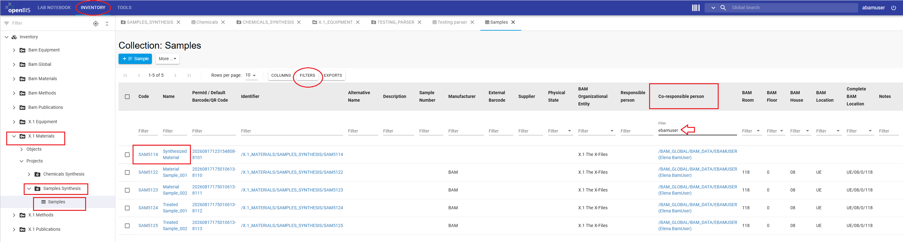
Data model for the “Material Synthesis” example. The unidirectional arrows connecting Objects in the Lab Notebook and Inventories represent the parent-child relationships used to describe the research workflow and make its provenance traceable.
Relationships to add to “Material Synthesis”
Relationship
Object type
Object Name
Role in the workflow
Parent
Instrument
Synthesis
Instrument used during the Experimental Step
Parent
Chemical
Chemical 1
Chemical used during the Experimental Step
Parent
Chemical
Chemical 2
Chemical used during the Experimental Step
Child
Sample
Synthesized Material
Sample generated by the Experimental Step
Add all parents and children to the Experimental Step
Parent-child relationships can be assigned to an Experimental Step or any other Object from the Object's
Edit tab. Add all relationships listed above in one editing session and save once after you
have reviewed the complete set.
Instructions:
Select the upper LAB NOTEBOOK tab.
Navigate to your User Space → Material Synthesis Project → Synthesis Collection.
Open the Experimental Step Material Synthesis.
Click the Edit tab.
In the Parents section, click Search Any.
Select Instrument as the Object Type, start typing Synthesis in the Code/Name field, wait for auto-completion, and select the correct Instrument.
Still in the Parents section, click Search Any again, select Chemical as the Object Type, and add Chemical 1.
Repeat the previous action to add Chemical 2 as a parent.
In the Children section, click Search Any.
Select Sample as the Object Type.
In the Code/Name field, enter or start typing the Code of your filtered Synthesized Material Sample and select the matching Object.
Review that the Experimental Step has three parents—instrumentSynthesis, Chemical 1, and Chemical 2—and one child—your Synthesized Material Sample, with your name as Co-responsible person.
Click Save.
Reopen the Experimental Step and confirm that the intended parents and child are displayed.
Open the Material Synthesis Experimental Step, select the Edit tab.
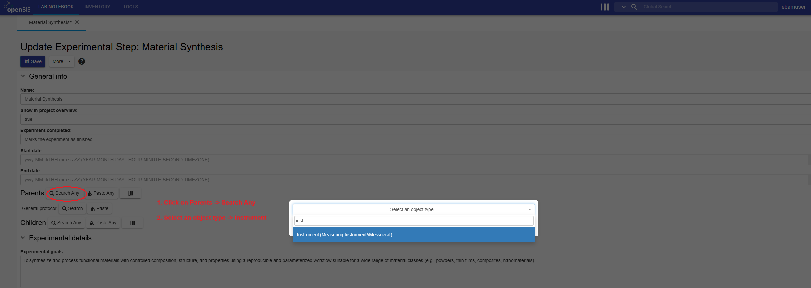
locate the Parents section with the Search Any controls, use the select an Object Type field with auto-completion to add Instrument.
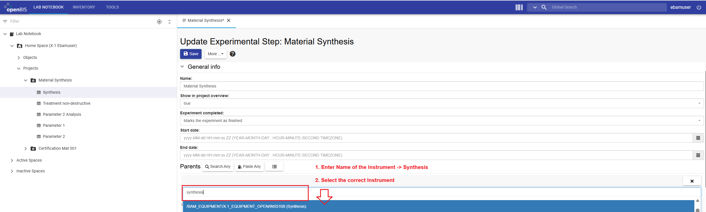
use the Code/Name field with auto-completion to add Synthesis as parent.
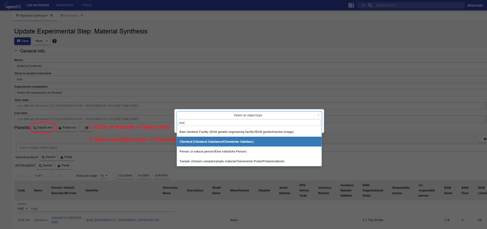
locate the Parents section with the Search Any controls, use the select an Object Type field with auto-completion to add Chemical.
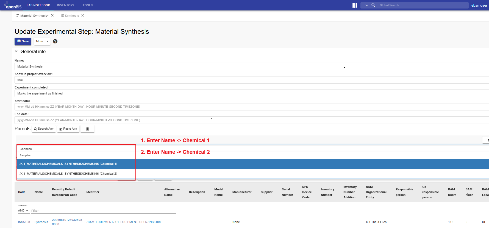
use the Code/Name field with auto-completion to add Chemical 1 and Chemical 2 as parents.
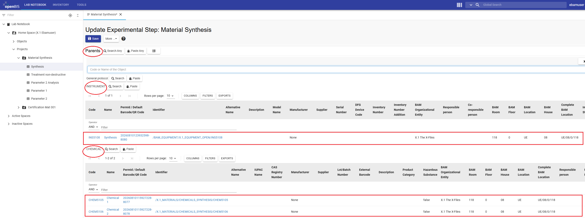
Confirm that instrument Synthesis, Chemical 1 and Chemical 2 are added as parents.
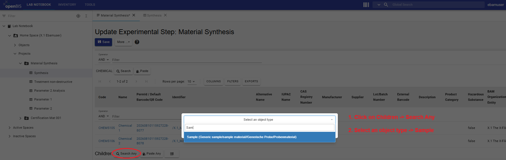
locate the Children section with the Search Any controls, use the select an Object Type field with auto-completion to add Sample.
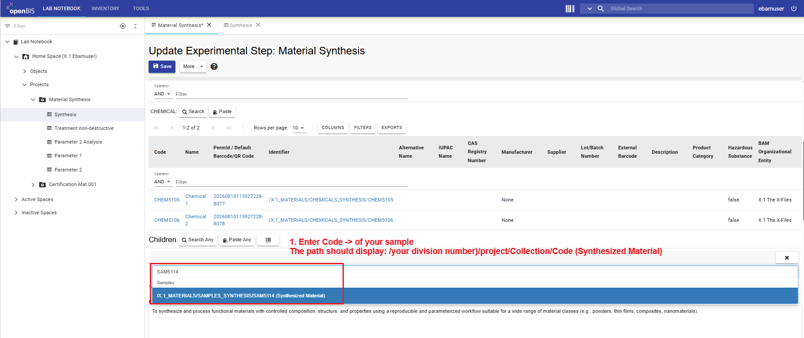
use the Code/Name field with auto-completion to add The code of your Sample, this should start with SAMand be followed by three numbers.
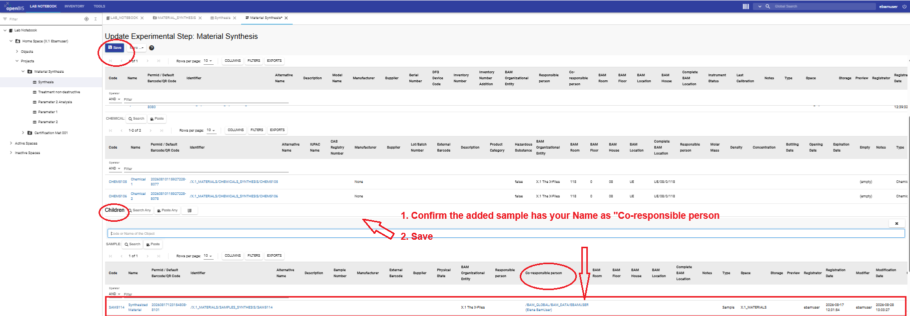
Confirm the sample Synthesized Material with your name as Co-responsible person is added as a child and Save.Back to top
Step 2: Batch-update Samples from the same Collection
The Sample objects registered in the previous Inventory tutorial are located in the same
Samples Collection. Instead of editing each Sample separately, export their metadata,
add the required relationship information, and use XLS Batch Update Objects.
Select the Sample objects that you want to connect.
Export the selected object metadata to an Excel file.
Save an unchanged backup copy of the exported file before editing it.
Instructions to prepare and upload the batch update:
Open the exported Excel file.
Identify the columns representing parent and child relationships.
Add the object identifiers required to connect each Sample to the Experimental Step that generated it and, where applicable, to the downstream Experimental Step in which it is used.
Edit only the relationship values that need to change.
Do not modify object identifiers, codes, column headings, or the worksheet structure.
Save the updated Excel file under a clear filename, for example samples_material_synthesis_connections.xlsx.
Return to the Samples Collection and select More → XLS Batch Update Objects.
Upload the updated file, verify the filename, and click Accept.
Open several updated Sample objects and verify their parent-child relationships.
Batch registration versus batch update: do not use
XLS Batch Register Objects for this step. These Sample objects already exist.
Batch registration creates new objects; batch update modifies existing objects.
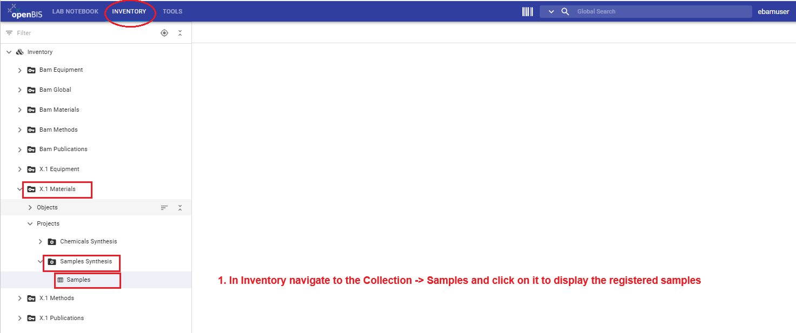
In Inventory, navigate to the X.1 Materials -> Samples Synthesis -> Samples collection and click on it to display registered Samples.
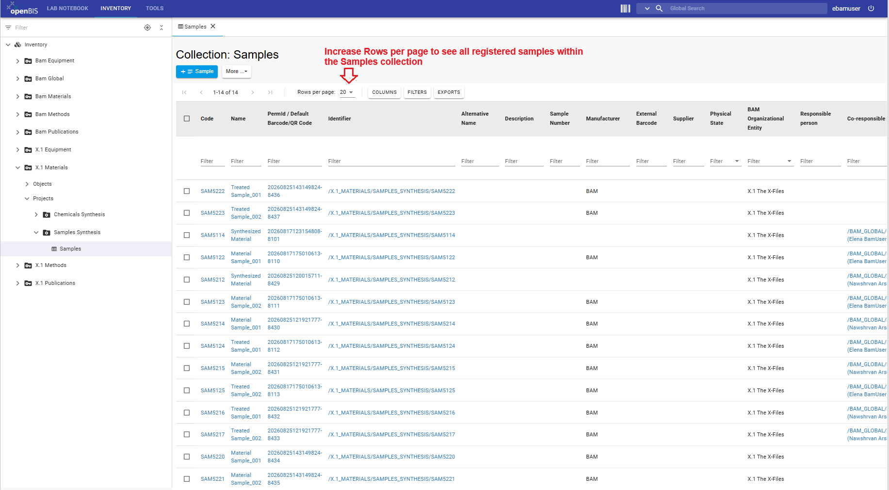
Increase the Raws per page to see all samples registered by your colleagues.
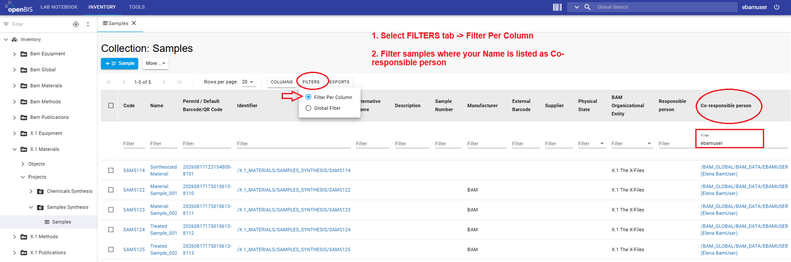
Use the FILTERS tab to Filter Per Column. Navigate to the Co-responsible person column and start typing your user name to select your samples.
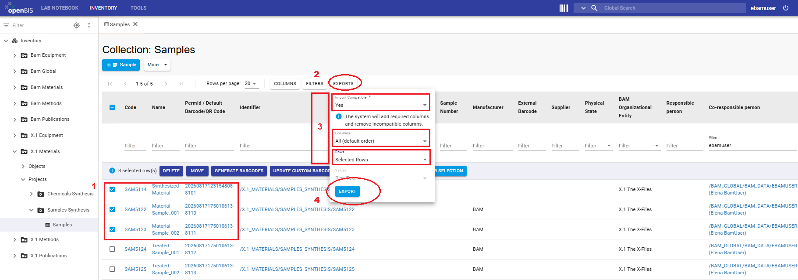
Select the sample you want to update and export the Excel file. Samples to update are:Synthesized Material, Material Sample_001 and Material Sample_002
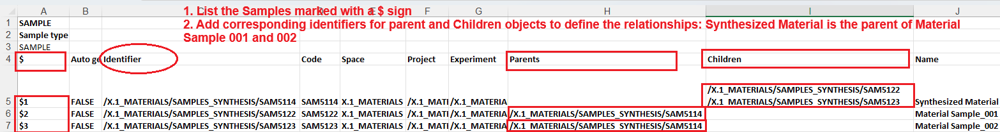
Update Excel file for $, Parents and Children columns using the sample Identifier to define the relationships and save the file.
Navigate to X.1 Materials → SAMPLES_SYNTHESIS → Samples. Open the More drop-down menu and choose XLS Batch Update Objects.
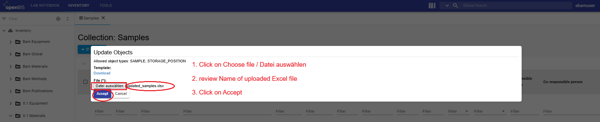
Click Datei auswählen/choose file, select the updated Excel file updated_samples.xlsx, replace the file by your own and click Accept.
Visualize the connections you have created between the samples.
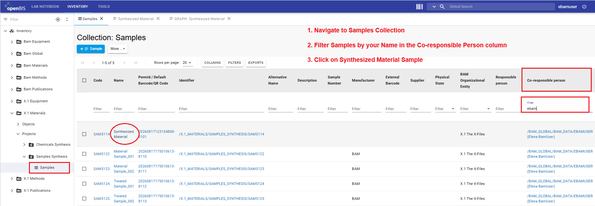
Navigate to the updated samples and visualize the connections.
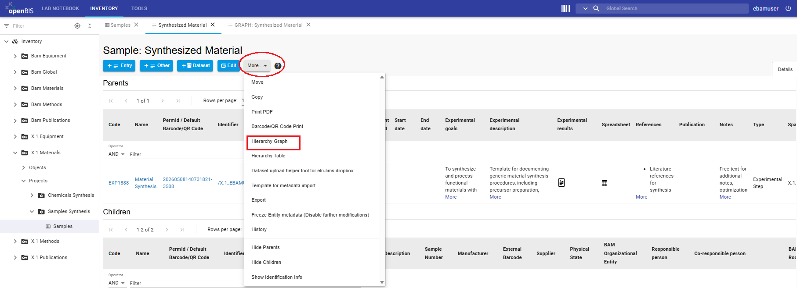
Open the hierarchical graph for the Synthesized Material sample that you registered to view the relationships.
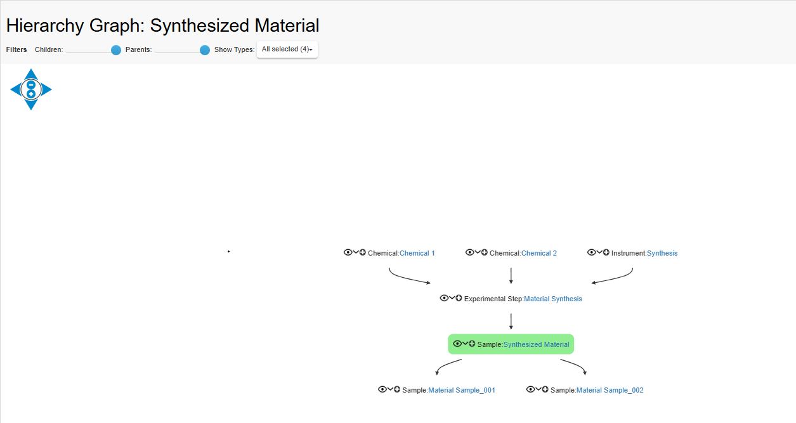
The hierarchical graph for the Synthesized Material sample that you registered should display by now all the connections you define in Steps 1 and 2.Back to top
Step 3: Batch-update objects from different Collections
The complete “Material Synthesis” workflow spans several Collections and Object types.
openBIS 20.10.12+ supports updating existing Objects of different types in different Collections from
Tools → Utilities → Object Browser → XLS Batch Update Objects.
In this tutorial, use this function to complete several parent-child relationships in one Excel-based update.
What openBIS needs for a cross-Collection XLS batch update:
After you select the Object types, openBIS generates an Excel template. For every Object to be updated,
the file must identify its Space, Project, Collection,
and unique Identifier. Use the complete Project and Collection paths expected by the
generated template. The Identifier is essential because it tells openBIS exactly which existing Object
has to be updated.
Prepare the identifiers before editing the multi-type template
The easiest and safest approach is to first collect the identifiers from the Collections where the
Objects are already registered. Do not try to reconstruct identifiers from Object names.
Recommended way to extract the required metadata:
Open the Collection that contains the Objects you need, for example Instruments,
Chemicals, Samples, or a Lab Notebook Collection containing Experimental Steps.
In the Collection table, use Columns to display at least Identifier
and Name. For Samples, also display Co-responsible person so that you can
distinguish the Samples you registered from Samples with the same names registered by other division members.
If necessary, filter the table so that only the Objects needed for the Material Synthesis workflow remain.
Export the table with Import Compatible = YES and export the selected columns.
Keep these exports as reference files; do not upload them as the cross-Collection update file.
Repeat this for each relevant Collection. You now have the exact identifiers and locations of the existing Objects.
Why use Collection exports as reference files?
The openBIS documentation explicitly describes an import-compatible table export as the preparation method
for XLS batch updates within one Collection. For an update across several Collections, the documentation
instead requires the template generated in Object Browser. Combining the two workflows is practical:
use Collection exports to obtain reliable identifiers and use the Object Browser template as the file that
you actually complete and upload.
Complete location information and the Identifier for each Sample used as an input or output in the workflow.
Filter by Co-responsible person to identify the Samples you registered in the previous tutorial.
Create and complete the cross-Collection update file
Instructions:
Open Tools → Utilities → Object Browser.
Select XLS Batch Update Objects.
Select the Object types required for this update:
Chemical, Instrument, Experimental Step, and Sample.
Download the Excel template generated by openBIS for these Object types.
Use your reference exports to complete the Space, Project,
Collection, and Identifier information for every existing Object to be updated.
Use the complete paths required by the template.
In the relationship columns supplied by the generated template, enter the identifiers of the existing
parent and/or child Objects needed to represent the Material Synthesis workflow.
When several related Objects must be entered in one relationship cell, follow the syntax provided by
the generated openBIS template and do not invent separators.
Only include Objects whose relationships you intend to update. Review the identifiers carefully against
your reference exports before saving the file.
Save the completed file under a clear name, for example
material_synthesis_relationships_batch_update.xlsx.
Return to Object Browser → XLS Batch Update Objects, upload the completed file, verify the filename, and click Accept.
Open representative Experimental Step, Instrument, Chemical, and Sample Objects and verify that the intended parent-child relationships are present.
Do not use the batch-registration workflow:
these Objects already exist. Step 3 changes their relationships, so use
XLS Batch Update Objects. Also keep an unchanged copy of each metadata export and of the
completed update file before upload.
Important when editing an update file:
the openBIS documentation states that removing a column or leaving a cell empty preserves the corresponding
existing value. Deleting an existing value or parent-child connection requires the special deletion value
defined by openBIS; do not use an empty cell to mean “delete”.
Documentation basis:
For updates within one Collection, openBIS documents displaying the Identifier and the fields
to update, optionally filtering the table, and exporting with Import Compatible = YES.
For updates across several Collections, openBIS documents using
Tools → Utilities → Object Browser → XLS Batch Update Objects, selecting the Object types,
downloading the generated template, and providing complete Space/Project/Collection paths and unique Object
identifiers.
See
Batch update entries in several Collections.
Object Browser opened from Tools → Utilities, with XLS Batch Update Objects selected and the Chemical, Instrument, Experimental Step, and Sample Object types chosen for the update.Example of an import-compatible Collection export used as a reference to obtain the exact Object Identifier and location information. For Samples, include Co-responsible person to identify your own registered Objects.Object Browser XLS batch-update template completed with the required Object locations, unique identifiers, and parent-child relationship values before upload.Back to top
Step 4: Visualise and verify the relationship hierarchy
After the relationships have been added, use openBIS to visualise the parent-child genealogy of an
Object. The Hierarchy Graph displays only Object-to-Object parent-child relationships;
it does not display datasets. For this tutorial, start from an Experimental Step that has an attached dataset.
Use that Experimental Step as the link between the Object genealogy shown in the graph and the dataset whose
provenance you want to understand.
Instructions to open the Hierarchy Graph:
Open the Lab Notebook and navigate to the Material Synthesis Project.
Open an Experimental Step that has an attached dataset.
In the Object form, open the More… drop-down menu.
Select Hierarchy Graph.
Review the parents and children shown around the Experimental Step.
If the graph is large, reduce it by selecting how many levels of parents and/or children to display and by limiting the Object types shown.
Parent Objects Which resources or inputs led into this activity?
↓
Experimental Step Which activity is documented here?
↓
Child Objects Which Samples or downstream activities resulted from it?
Traceability check:
Confirm that the Experimental Step has the expected dataset attached.
In the Hierarchy Graph, confirm that the expected parent Objects are present, for example the Instrument, Chemical, or input Sample used in the activity.
Confirm that the expected child Objects are present, for example a generated Sample or downstream Experimental Step.
For larger genealogies, prune the graph to the parent/child depth and Object types needed for the question you are checking.
Repeat the check for the main Experimental Steps in the “Material Synthesis” workflow.
If a connection is missing or reversed, correct the parent-child relationship using direct editing or batch update, then reopen the hierarchy view to verify the correction.
Alternative view: Hierarchy Table
If a graphical tree is difficult to review, return to the Object form and select
More… → Hierarchy Table. This presents the genealogy of the selected Object in a
tabular format and provides an alternative way to inspect the same parent-child structure.
Documentation basis: the openBIS 20.10.12+ documentation states that parent-child
relationships between Objects can be visualised as trees or tables in the ELN. The genealogical tree is
opened with More… → Hierarchy Graph from an Object form; large trees can be pruned by
parent/child levels and Object types. The tabular genealogy is available through
More… → Hierarchy Table. See
Visualise Relationships
.
Experimental Step Object form with More… → Hierarchy Graph selected.Hierarchy Graph showing the connected Objects and the controls for pruning parent/child levels or Object types.Hierarchy Table opened from More… as an alternative tabular view of the Object parent-child relationships.Back to top
Result
After completing this tutorial, you should be able to connect research data by linking Experimental
Steps registered in the Lab Notebook with Inventory items such as Instruments and Chemicals and with
research outputs such as Samples. You should also be able to update relationships efficiently for
objects in one Collection or across different Collections. You should also be able to open the
Hierarchy Graph or Hierarchy Table for an Experimental Step, inspect and
prune its Object genealogy, and use that hierarchy together with the dataset attached to the Experimental
Step to reconstruct which resources were used, which Samples were produced, and how outputs were used in
later activities.